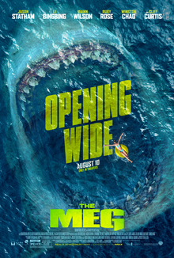

Jason Rosie
Life
Jason Statham born 26 July 1967 is an English actor. He is known for portraying characters in various action-thriller films who are typically tough, gritty, or violent. Statham has been credited for leading the resurgence of action films during the 2000s and 2010s.[1] His film career through 2017 generated over $1.5 billion (£1.1 billion) in ticket sales, making him one of the film industry's most bankable stars.
Lista e filmave
- Mechanic: Resurrection
- Wrath of Man
- Chaos
- Fast & Furious Presents: Hobbs & Shaw
- Homefront
The meg
The Meg is a 2018 American science fiction action film directed by Jon Turteltaub from a screenplay by Dean Georgaris, Jon Hoeber, and Erich Hoeber, loosely based on the 1997 novel Meg: A Novel of Deep Terror by Steve Alten.[3][1] The film stars Jason Statham, Li Bingbing, Rainn Wilson, Ruby Rose, Winston Chao, and Cliff Curtis. In the plot, a group of scientists encounters a 75-foot-long (23 m) megalodon shark while on a rescue mission on the floor of the Pacific Ocean.
| yeas | nominated work | award |
|---|---|---|
| 2015 | Spy | Best Actor in Comedy |
| 2015 | Furious 7 | Choice Movie: Villian |
Homefront
In popular media
In 2003, Statham appeared in three British television commercials for the Kit Kat chocolate bar. Described as a "break philosopher", he philosophised about salmon swimming upstream, a Mexican fisherman, and the relative speeds and ages of animals, before ending with a reminder that "taking a break" (alluding to the Kit Kat slogan) is an important part of life